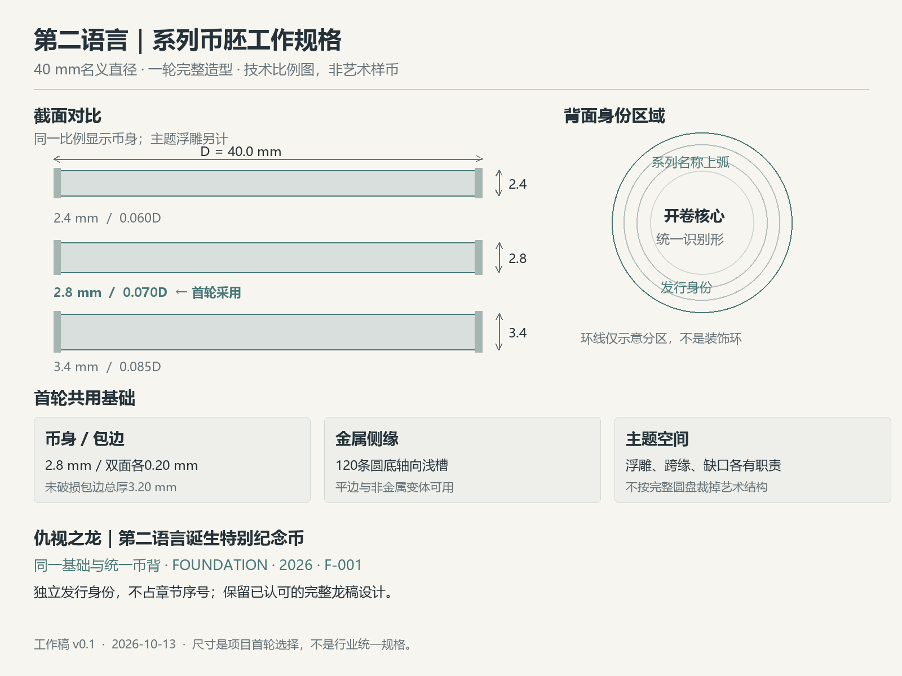

制造设计研究 · 首轮工作规格 v0.1 · 2026-10-13

双页、中缝与行线用于统一币背；取消应用底板，研究浅浮雕与金属工艺。这里展示原资源，尚未制作最终艺术币背。
每组共享12个机位，三组共36张；白模补充正交与细节图，首套计划约44张。此处展示制作配置，图片集接下来制作。
| 内容 | 章节认证币 | 诞生特别纪念币 |
|---|---|---|
| 基本币体 | 40 mm / 2.8 mm | 同一基础 |
| 统一币背 | 开卷 + 系列名 | 同一身份核心 |
| 发行身份 | 真实章号，例如CH-0001 | FOUNDATION · 2026 |
| 编号 | 保留真实章绑定 | F-001，独立于章序 |